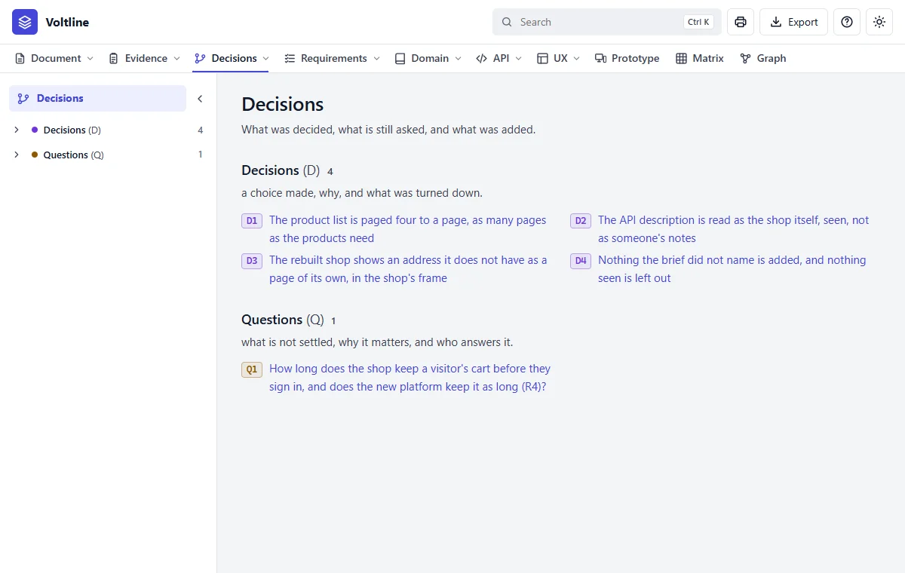
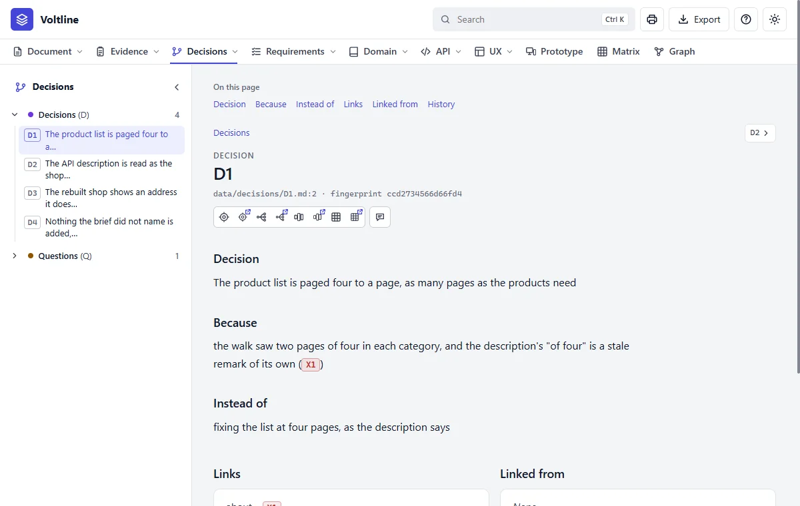
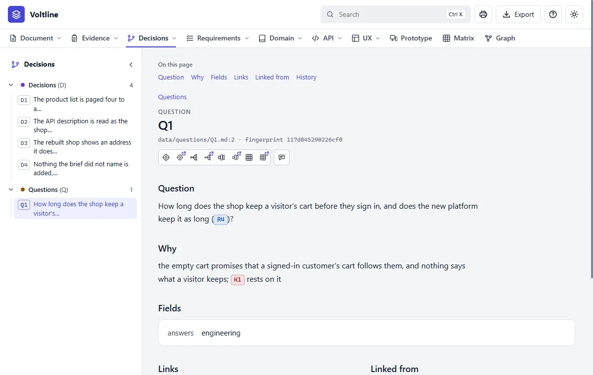

Part 3: Reading what you get
Decisions
In everyday termsThe minutes of the meeting. Every project makes choices, and forgets why. This module keeps what was decided, the reason and what was turned down, plus the questions nobody can answer yet.
What it answersWhat was decided and why, and what's still being asked?
What's in it

A decision, part by part

- 1Decision. What was chosen.
- 2Because. The reason, tied to what it rests on, here
X1. - 3Instead of. What was turned down.
A question, part by part

- 1Question. Ties to what it's about, here
R4. - 2Why. What depends on the answer.
- 3Answers.
engineeringor the product side. Only questions for the product side hold up an agreement.
Read it like this
- Read the questions first. They're where the specification is thin.
- For a decision, read Because before you disagree with it. The reason may still stand.
- Read Instead of. If your better idea is listed there, someone has already been down that road.
An answer doesn't just close a question. do answer turns it into a decision with its reason, and moves every link from the question to the decision. Nothing is lost.
Mistakes people make
- Burying a decision in a requirement's text. It can't be found, and its reason is lost.
- Leaving out what was turned down. The same argument comes back in six months.